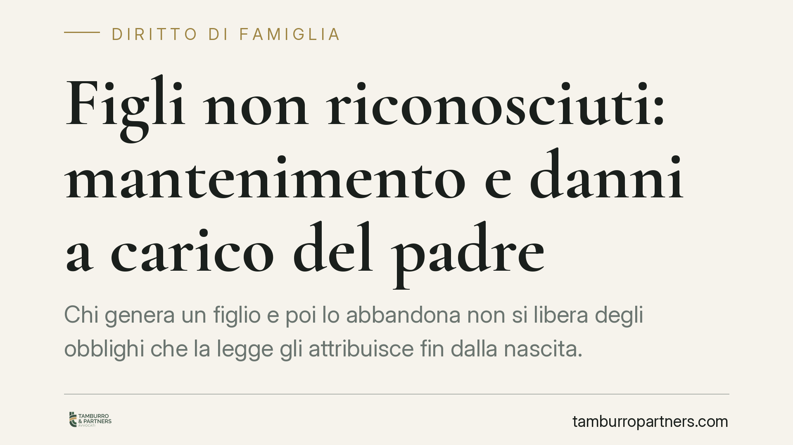

Figli non riconosciuti: mantenimento e danni a carico del padre
Chi genera un figlio e poi lo abbandona non si libera degli obblighi che la legge gli attribuisce fin dalla nascita. La giurisprudenza di legittimità distingue due piani: il mantenimento dovuto dal concepito e il risarcimento del danno da illecito endofamiliare. Qui spieghiamo come si accerta la paternità, cosa si può chiedere e quali termini considerare prima di agire.

Il fatto e i due piani di responsabilità
Il tema è ricorrente: un uomo ha un rapporto non protetto, viene concepito un figlio e il padre si sottrae a ogni coinvolgimento, talvolta rifiutandosi persino di sottoporsi al test del DNA. La giurisprudenza affronta la vicenda su due piani distinti, che è bene non confondere.
Il primo è l'obbligo di mantenimento. Il secondo è il risarcimento del danno da illecito endofamiliare, cioè il danno derivante dalla violazione dei doveri genitoriali. Sono due pretese autonome: possono coesistere, ma hanno presupposti e termini diversi.
Inquadramento normativo
L'obbligo di mantenere, istruire ed educare i figli discende dagli artt. 147 e 148 del Codice civile ed è radicato nell'art. 30 della Costituzione, che impone ai genitori il dovere di mantenere la prole "anche se nata fuori del matrimonio".
Il riconoscimento del figlio, o la dichiarazione giudiziale di paternità prevista dall'art. 269 c.c., hanno natura *dichiarativa* e non *costitutiva*: non creano il rapporto di filiazione, ma accertano una situazione preesistente. Ne discende un corollario preciso: l'obbligo di mantenimento retroagisce al momento della nascita, perché il genitore era tale fin da allora, a prescindere da quando la paternità sia stata formalmente accertata.
Il secondo piano è quello risarcitorio. La Cassazione, anche a Sezioni Unite, ha da tempo riconosciuto l'autonoma risarcibilità dei danni derivanti dalla violazione dei doveri familiari. L'illecito endofamiliare si inquadra negli artt. 2043 e 2059 c.c., letti alla luce degli artt. 2 e 30 della Costituzione, e consente il ristoro del danno non patrimoniale subìto dal figlio per la privazione della figura genitoriale.
Il requisito soggettivo e la prova della paternità
Un punto spesso trascurato: il danno endofamiliare non è automatico. Presuppone un elemento soggettivo, cioè la consapevolezza della procreazione da parte del padre, o quantomeno una colpevole ignoranza. Chi ignorava senza colpa l'esistenza del figlio si trova in una posizione diversa da chi, pur sapendo o potendo sapere, ha scelto l'abbandono. È su questo crinale che si gioca gran parte del contenzioso.
Sul versante probatorio, il rifiuto di sottoporsi al test del DNA non blocca l'accertamento. Secondo la giurisprudenza costante, tale rifiuto costituisce un argomento di prova valutabile dal giudice ai sensi dell'art. 116 c.p.c. e, unito ad altri indizi gravi, precisi e concordanti (relazione tra le parti, periodo del concepimento, comportamenti successivi), può fondare la dichiarazione di paternità. In sostanza, chi si sottrae all'esame non ne trae vantaggio processuale.
Implicazioni pratiche
Per il figlio, o per il genitore che agisce nel suo interesse, ciò significa poter chiedere non solo il mantenimento per il futuro, ma anche il rimborso di quanto l'altro genitore ha anticipato dalla nascita, oltre all'eventuale risarcimento per l'assenza della figura paterna.
Resta centrale il profilo della prescrizione, da trattare distinguendo le due pretese.
Il credito di mantenimento matura per singoli ratei periodici: i crediti già scaduti sono soggetti, in linea generale, alla prescrizione, da verificare in relazione alla natura periodica dell'obbligazione. L'azione di dichiarazione giudiziale di paternità, invece, è per il figlio imprescrittibile (art. 270 c.c.).
L'azione risarcitoria per illecito endofamiliare segue le regole dell'illecito aquiliano, con il termine di prescrizione proprio del danno extracontrattuale, il cui decorso va ancorato al momento in cui il danno si è manifestato ed è divenuto conoscibile. Si tratta del punto più delicato: la data di partenza del termine incide direttamente sulla fondatezza della domanda e va ricostruita con attenzione caso per caso.
Cosa fare in concreto
- Raccogliere la documentazione utile a provare la relazione e il periodo del concepimento: messaggi, testimonianze, documenti sanitari.
- Conservare le prove delle spese sostenute per il figlio dalla nascita, perché costituiscono la base del rimborso richiedibile.
- Promuovere la dichiarazione giudiziale di paternità ai sensi dell'art. 269 c.c., tenendo presente che il rifiuto del DNA è valutabile contro chi vi si sottrae.
- Distinguere le domande: mantenimento retroattivo e risarcimento del danno vanno impostati su presupposti e termini diversi.
- Verificare la cornice prescrizionale prima di agire: è opportuno un esame professionale del caso per individuare i termini applicabili e la decorrenza del danno.
Contributo informativo a cura di Tamburro & Partners Avvocati. Non costituisce parere legale.
Ogni famiglia ha il suo equilibrio.
Separazione, divorzio, affidamento, assegno: se vuoi un confronto riservato su una specifica situazione, scrivi allo studio. Ti rispondiamo entro un giorno lavorativo.